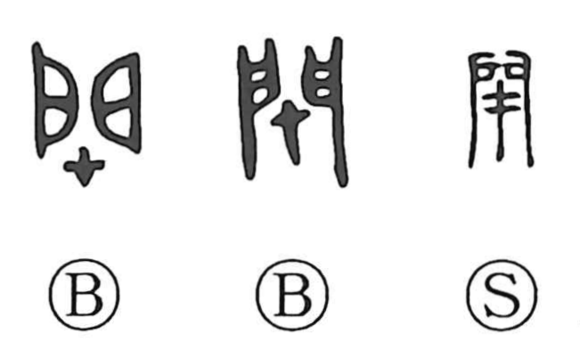

閉

Kun: tojiru, tozasu, shimeru, shimaru | On: hei, hetsu
to close ・ to shut ・ to seal ・ to block
Explanation
Shirakawa explains 閉 as a compound of the gate 門 and 才, with 才 understood not as “talent” but as a post-like landmark tree set up as a sign. Erected at a gateway, this post becomes a ritual barrier that wards off evil, sealing the threshold and marking the boundary between inside and outside. From this protective act arises the meanings “to shut in,” “to close,” and “to stop up” a door. In the compound 閉口, the sense is literally that of closing the mouth—falling silent—which in Japanese usage came to suggest being talked down or left speechless in surrender.